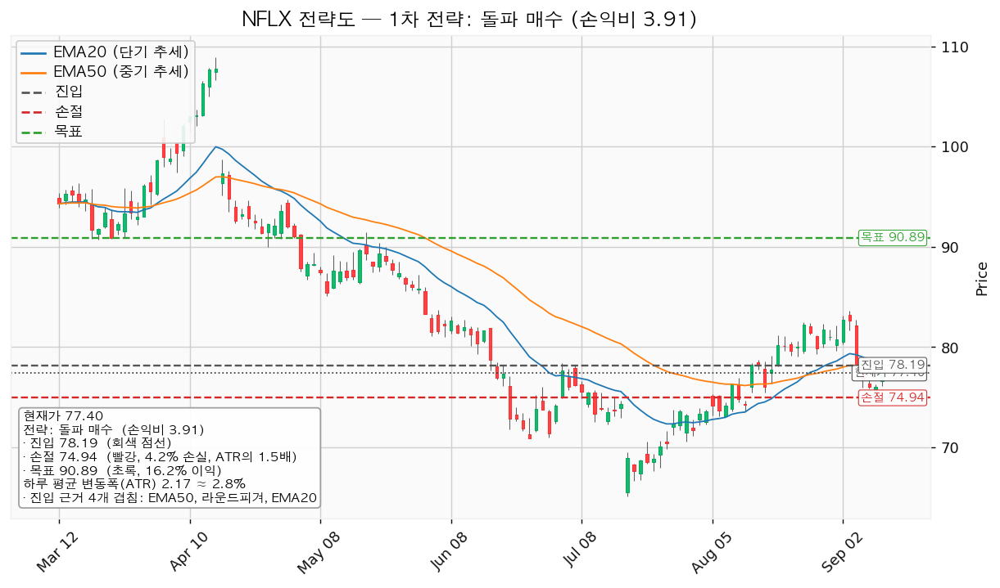
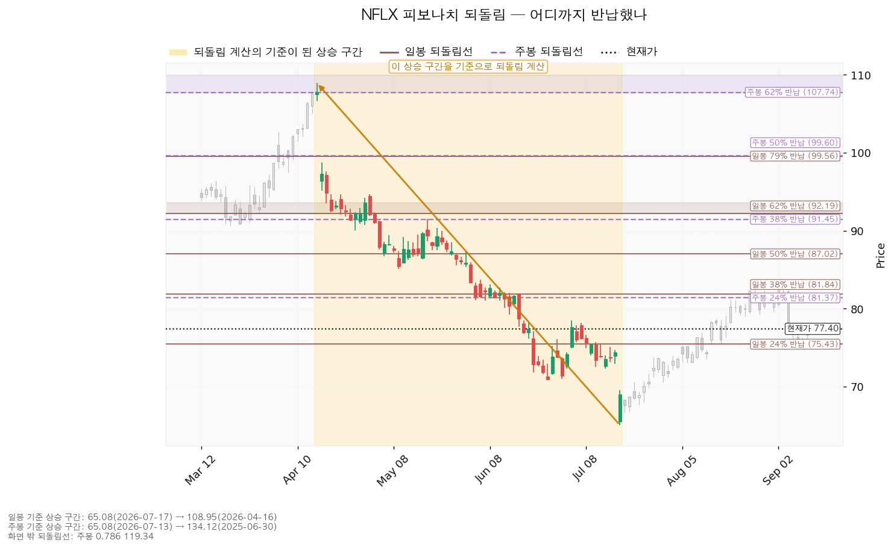
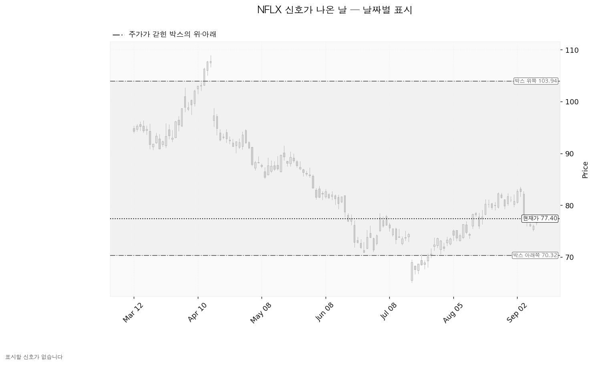
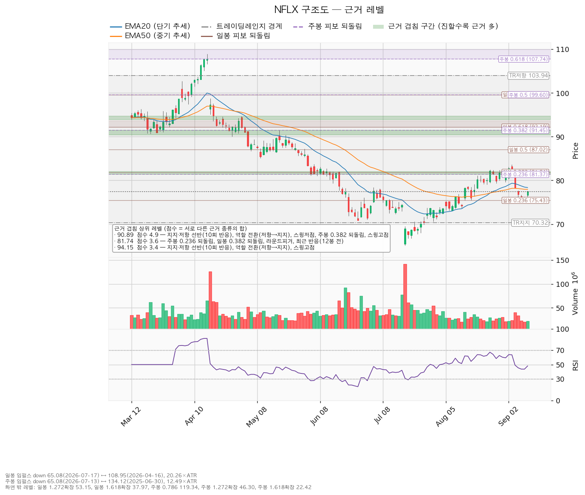

넷플릭스(NFLX)는 월정액 구독과 광고 요금제로 영화·드라마를 인터넷으로 내보내는 미국 스트리밍 기업이며, 직접 제작한 콘텐츠와 외부에서 사들인 콘텐츠를 함께 서비스합니다.
| 구분 | 가격 | 판정 방식 | 현재 상태 |
|---|---|---|---|
| 회복선(진입 조건) | 78.19달러 (+1.02%) | 일봉 종가로 회복한 뒤 되돌림에서 지지되는지 | 회복 대기 — EMA50(77.95)·EMA20(78.37) 사이 |
| 집행 손절 | 74.94달러 (-3.18%) | 장중 저가 터치 | 미진입이면 의미 없음 — 78.19 종가 회복으로 들어간 경우에만 작동 |
| 관망 종료 기준 | 75.43달러 (-2.54%) | 일봉 종가로 아래 마감 | 유지 중 — 9/10 저가 75.03으로 구간 안에 들어갔으나 종가 76.01로 위에서 마감 |
| 확인선 | 90.89달러 (+17.43%) | 일봉 종가 돌파 후 되돌림 지지 확인 | 미돌파 |
| 폐기선 | 70.32달러 (-9.15%, 하루 평균 변동폭의 3.27배 아래) | 이탈 후 3거래일 내 종가 회복 실패(또는 그 전에 68.15 아래 종가 마감) + 반등에서 저항으로 확인 | 유지 중 — 거리가 3배를 넘어 실무상 무효화 기준으로 작동하지 않습니다 |
① 당시 걸었던 조건의 성적표. 직전 리포트는 "84.72달러 일봉 종가 회복 시 돌파 매수"를 대표 셋업으로 걸었습니다. 8/31 이후 최고 종가는 9/2의 82.73달러, 최고가는 9/3의 83.60달러로 84.72를 종가로 회복한 날은 없었습니다 — 진입 조건 미충족이며, 대표 셋업은 집행되지 않았습니다. 폐기선 70.32달러도 유지됐습니다(기간 최저가 9/10의 75.03달러).
보조로 냈던 눌림목 매수(진입 78.03 / 집행 손절 76.44)는 다른 경로를 밟았습니다. 9/4 하락(종가 82.67 → 78.25, 거래량 4,019만 주로 평소의 두 배 수준)에 이어 9/8 시가가 77.55달러로 진입가 아래에서 출발했고, 9/9 저가 75.87달러로 손절가를 지났습니다. 가격만 놓고 보면 이 셋업은 진입 후 손절이 되는 경로였습니다. 다만 장부에 NFLX 체결 기록이 없어 실제 보유 수량과 평단은 없으며, 기록이 없다는 것이 "보유하지 않았다"는 확인은 아닙니다.
② 좌표가 어떻게·왜 움직였나.
| 항목 | 2026-08-31 | 2026-09-12 | 왜 움직였나 |
|---|---|---|---|
| 회복선 | 84.72 | 78.19 | 9/4~9/10 하락으로 현재가가 EMA 아래로 내려오면서, 현재가 바로 위의 겹침 구간이 84.00~85.10에서 77.95~78.44(EMA50·EMA20·80달러 라운드피겨·스윙고점)로 바뀜 |
| 확인선 | 103.94 (박스 상단) | 90.89 (겹침 4.9점) | 확인선은 겹침 근거가 가장 두꺼운 상단 저항으로 고릅니다. 박스 상단 103.94는 그 위 맥락으로 내려갔습니다 — 직전 리포트가 박스 상단을 확인선 자리에 올린 것은 이번 기준과 다르므로 정정합니다 |
| 폐기선 | 70.32 | 70.32 | 박스 하단 그대로, 변화 없음 |
| 대표 셋업 진입 | 84.72 | 78.19 | 위와 같음 |
| 집행 손절 | 83.58 (0.5 ATR) | 74.94 (1.5 ATR) | 손절 폭이 하루 변동폭의 절반에서 1.5배로 넓어졌습니다 |
| 목표 | T1 86.51 / T2 90.89 | 90.89 단일, 전량 청산 | 집행 정책이 목표 전량 청산으로 고정돼 있습니다 |
| 손익비 | 1차까지 1.57 / 전 구간 3.50 | 3.91 | 목표는 같은데 손절 폭이 넓어졌고 진입가가 6.53달러 낮아진 결과입니다 |
| ATR / RSI | 2.28 / 62.66 | 2.17 / 48.04 | 하락 뒤 과열도가 중립으로 내려왔습니다 |
직전 리포트의 손익비 1.57은 손절을 하루 변동폭의 0.5배로 조여서 나온 값이었습니다. 이번 3.91은 손절 폭 1.5배에서 나온 값이므로 두 숫자를 같은 층위로 비교하면 안 됩니다.
③ 판단은 바뀌었나. 결론의 성격은 직전과 같습니다 — 신규 추격은 하지 않고 종가 회복을 기다리는 관망입니다. 바뀐 것은 기다리는 가격(84.72 → 78.19)과 그 대기의 조건이 충족될 때 받게 되는 손익비(1.57 → 3.91)입니다.
두 가지는 정정하거나 표면화해야 합니다. 첫째, 위 표에 적은 확인선 기준 변경입니다. 둘째, 직전 리포트가 매집 근거로 인용한 2026-07-27 속임수 하락(69.86달러)이 이번 산출의 신호 목록에는 들어 있지 않습니다 — 이번 조회에서 표시할 신호가 하나도 없었습니다. 박스 내부에서는 저점 흐름이 절하에서 절상으로 바뀌었지만, 지지 테스트 거래량은 여전히 증가 추세이고 종합 판정은 직전과 같은 중립입니다.
한 가지 확인도 함께 적습니다. 직전 리포트는 8/28 종가를 시간별 마지막 체결가 81.73달러로 채워 계산했는데, 확정된 8/28 종가는 81.72달러였습니다. 당시 보정은 결과를 왜곡하지 않았습니다.
| 항목 | 값 |
|---|---|
| 현재가 | 77.40달러 (2026-09-11 종가) |
| 단기 이평(EMA20) | 78.37달러 — 현재가가 아래 |
| 중기 이평(EMA50) | 77.95달러 — 현재가가 아래 |
| RSI(14) | 48.04 (0~100 사이 과열·침체 지표, 50 부근은 중립) |
| 하루 평균 변동폭(ATR) | 2.17달러 (주가의 2.8%) |
| 횡보 박스 | 70.32 ~ 103.94달러 (유효) |
| 최근 신호 | 없음 — 이번 산출에서 표시할 속임수 하락·강세 신호 등이 잡히지 않았습니다 |
| 국면 후보 | 미확정 — 하락 이탈 후 형성된 박스로, 매집인지 재분산인지 갈리지 않았습니다 |
| 다음 실적 | 2026-10-21 |
박스는 어느 구간을 본 것인가. 조회한 일봉 753개 중 최근 180봉을 본 판정입니다. 40봉·90봉·180봉을 모두 시험해 40봉은 가격이 박스 안에 머문 비율 95%인데 한쪽 방향성이 0.515로 강해 인정되지 않았고, 90봉은 머문 비율 57.8%로 미달이었으며, 180봉이 머문 비율 95%·방향성 0.379로 채택됐습니다.
박스 안쪽에서 무슨 일이 있었나. 같은 사각형이라도 매집과 재분산은 안쪽 거래량과 저점 흐름으로 갈립니다.
① 상승 전환 78.19달러를 종가로 회복해 지지된 뒤 90.89달러를 종가로 넘기는 경로입니다. 구조로는 속임수 하락 확인 → 강세 신호 → 되돌림 지지 → 상승 국면 순서입니다. 행동은 78.19 회복·지지 확인 후 진입, 90.89 종가 돌파 시 새 셋업으로 비중 확대입니다.
② 횡보 지속 70.32달러를 지키면서 90.89달러 아래에서 박스를 이어가는 경로입니다. 직전 박스에서 내려오며 쌓인 매물을 소화하는 데 시간이 걸리는 국면이며, 그 자체는 나쁜 신호가 아닙니다. 신규 진입은 보류하고 아래 세 관측치가 바뀌는지 추적합니다.
③ 시나리오 폐기 70.32달러 이탈 후 3거래일 내 종가 회복에 실패하거나 그 전에 68.15달러 아래로 종가 마감하고, 이후 반등이 70.32에서 막힐 때입니다. 매집이 아니라 재분산이었다는 뜻이며 추가 저점 갱신 가능성이 열립니다. 행동은 포지션 정리 후 새 매도 절정과 새 박스가 만들어질 때까지 관망입니다.
국면 판정은 횡보 레인지(구조 유지 — 하단 사수 조건부)입니다. 개별 종목은 매수만 다루며 두 가지가 산출됐습니다.
| 항목 | 돌파 매수 (대표) | 눌림목 매수 |
|---|---|---|
| 진입 | 78.19달러 (+1.02%) | 70.59달러 (-8.8%) |
| 진입 근거 겹침 | 4개 겹침 (2.8점) — EMA50, 80달러 라운드피겨, EMA20, 스윙고점 | 2개 겹침 (2.4점) — 박스 하단 지지, 스윙저점 |
| 집행 손절 | 74.94달러 (진입 기준선에서 ATR의 1.5배 아래, 손절 폭 4.15%) | 67.34달러 (ATR의 1.5배 아래, 손절 폭 4.6%) |
| 목표 | 90.89달러 — 전량 청산 | 81.74달러 — 전량 청산 |
| 목표 근거 겹침 | 4.9점 — 10회 반응 선반, 역할 전환(저항→지지), 스윙저점, 주봉 38% 되돌림, 스윙고점 | 3.6점 — 주봉 24% 되돌림, 일봉 38% 되돌림, 라운드피겨, 최근 반응(12봉 전) |
| 손익비 | 3.91 (손절 1.5 ATR) — 손절 폭이 처음부터 구조적 폭이라 구조적 손절 기준 손익비도 같은 값입니다 | 3.43 (손절 1.5 ATR) — 같은 이유로 구조적 기준도 같습니다 |
| 엣지 종류 | 모멘텀 — 저항을 돌파하면 그 방향이 이어진다는 전제. 자주 틀리고 소수가 크게 맞는 유형입니다(이 유형의 일반적 성격이며 이 엔진에서 측정한 값이 아닙니다) | 평균회귀 — 지지로 눌릴 때 산다는 전제. 승률이 높고 이익 폭이 작은 유형이며, 저항에서 전량 청산이 정합적입니다 |
| 구조 증명도 | 돌파 확인형 (가중치 1.0) | 선취형(구조 미확인) (가중치 0.7) |
대표 셋업을 이렇게 고른 이유. 선정 기준은 손익비 단독이 아니라 손익비 × 구조 증명도 × 근거 겹침입니다. 돌파 매수는 손익비 3.91에 돌파 확인형(가중치 1.0), 진입 겹침 2.8점으로 선정됐습니다. 눌림목 매수는 손익비 3.43으로 큰 차이가 없으면서 구조가 증명되기 전에 먼저 잡는 선취형이고 진입 겹침도 2.4점으로 얇습니다. 이번에는 손익비 1등과 대표가 같은 셋업이므로 둘을 맞바꾸는 판단은 필요하지 않았습니다.
집행 계획(대표 셋업). 78.19 일봉 종가 회복 확인 → 진입 → 목표 90.89에서 전량 청산, 트레일링은 걸지 않습니다. 진입에서 목표까지는 하루 평균 변동폭의 5.87배로 폭이 있으나, 집행 정책이 목표 전량 청산으로 고정돼 있어 다단 청산을 쓰지 않습니다. 90.89를 일봉 종가로 넘기는 경우는 이 포지션의 연장이 아니라 새 셋업으로 다시 잡습니다.
참고로 엔진은 분할 청산 수치도 함께 산출했습니다 — 80.00달러에서 절반 익절 후 잔여분 손절을 진입가 78.19달러로 올리는 경우 전 구간 손익비 2.24, 절반 익절 뒤 본전에 걸릴 때의 하한 손익비 0.28입니다(눌림목 매수는 72.00달러 절반 익절 기준 전 구간 1.93, 하한 0.21). 이 리포트의 집행 계획은 분할 없이 목표 전량 청산이므로 위 수치를 계획으로 쓰지 않습니다.
비중. 1회 매매에서 계좌의 1%를 잃는 것을 한도로 하면 손절 폭 4.15%에 대응하는 포지션은 계좌의 24.1%가 됩니다. 한 종목에 계좌의 13%를 넘게 싣지 않으므로 13%로 제한하며, 그만큼 이 매매에서 지는 위험도 계좌의 1%보다 작아집니다.
도구 적합성 점검. 하루 평균 변동폭이 주가의 2.8%로 8%를 넘지 않고 손절 폭은 그 1.5배입니다. 논지와 무관한 하루치 흔들림으로 손절이 체결될 위험은 낮은 편입니다. 다만 이 셋업의 시계는 수 주이고 아래 컨센서스는 12개월 기준이므로, 두 결론이 갈려도 모순이 아닙니다.

현재가 77.40달러는 위쪽 저항에 붙어 있어 현재가 추격은 권하지 않습니다. 대기할 좌표는 두 개입니다.
이동평균은 현재가 77.40달러가 5거래일 동안 유지될 경우 EMA20이 78.37 → 77.99, EMA50이 77.95 → 77.85로 내려옵니다. 이 투영치는 가격 예측이 아니라 "현재가가 그대로일 때 이평선이 어디에 놓이는지"입니다. 회복선을 이루는 겹침 구간이 지금보다 조금 낮아진다는 뜻이며, 실제 판정은 그날의 종가로 합니다.
일봉과 주봉 모두 계산 가능한 기준 구간이 있었습니다. 방향은 하락 구간이며, 되돌림선은 아래에서 위로 올라올 때의 저항 후보로 읽습니다.
| 기준 | 기준 구간 | 주요 되돌림선 |
|---|---|---|
| 일봉 | 108.95(2026-04-16) → 65.08(2026-07-17), 하루 변동폭의 20.26배 | 24% 75.43 / 38% 81.84 / 50% 87.02 / 62% 92.19 / 79% 99.56 |
| 주봉 | 134.12(2025-06-30) → 65.08(2026-07-13), 주간 변동폭의 12.49배 | 24% 81.37 / 38% 91.45 / 50% 99.60 / 62% 107.74 / 79% 119.34 |
현재가 77.40달러는 일봉 24% 되돌림(75.43)과 38% 되돌림(81.84) 사이에 있습니다. 위쪽 81.37~82.00 구간은 주봉 24% 되돌림·일봉 38% 되돌림·82달러 라운드피겨가 겹친 3.6점짜리 자리이고 12봉 전에 실제로 가격이 되돌아선 자리입니다. 9/3 고가 83.60에서 밀린 움직임이 이 구간과 맞물립니다. 아래쪽 75.43은 관망 종료 기준으로 쓰는 선이며, 목표 90.89 부근에는 주봉 38% 되돌림(91.45)이 함께 놓여 있습니다.

이번 산출에서는 표시할 신호가 없습니다. 속임수 하락·강세 신호 같은 날짜 있는 신호가 하나도 잡히지 않았고, 아래 차트에도 그 사실이 그대로 나옵니다. 직전 리포트가 매집 근거로 인용했던 2026-07-27 속임수 하락(69.86달러)은 이번 신호 목록에 포함되지 않았습니다. 국면 후보가 "미확정"으로 나온 것과 같은 맥락이며, 매집으로 읽을 근거가 하나 줄었다는 뜻입니다.

점수는 서로 다른 근거 종류의 가중치 합입니다. 같은 종류가 여러 개 붙어도 한 번만 더해지므로, 점수가 높을수록 성격이 다른 증거가 여러 갈래로 모인 자리입니다.
| 가격 | 점수 | 겹치는 근거 |
|---|---|---|
| 90.89달러 (90.41~91.48) | 4.9 | 10회 반응 선반, 역할 전환(저항→지지), 스윙저점, 주봉 38% 되돌림, 스윙고점 |
| 119.47달러 | 3.7 | 주봉 79% 되돌림, 10회 반응 선반, 역할 전환(저항→지지) |
| 81.74달러 (81.37~82.00) | 3.6 | 주봉 24% 되돌림, 일봉 38% 되돌림, 라운드피겨, 최근 반응(12봉 전) |
| 94.15달러 | 3.4 | 10회 반응 선반, 역할 전환(저항→지지), 스윙고점 |
| 91.96달러 | 3.2 | 12회 반응 선반, 역할 전환(지지→저항), 일봉 62% 되돌림 |
| 78.19달러 (77.95~78.44) | 2.8 | EMA50, 라운드피겨, EMA20, 스윙고점 |
| 99.58달러 | 2.5 | 일봉 79% 되돌림, 주봉 50% 되돌림 |
| 70.59달러 (70.32~70.86) | 2.4 | 박스 하단 지지, 스윙저점 |
| 85.30달러 | 2.4 | 스윙저점, 9회 반응 선반 |
| 75.72달러 (75.43~76.00) | 1.6 | 일봉 24% 되돌림, 라운드피겨 |
목표 90.89달러는 위쪽에서 근거가 가장 두꺼운 저항이며, 과거 저항이던 자리가 지지로 바뀐 이력까지 붙어 있습니다. 아래쪽에서 현재가에 가장 가까운 겹침은 75.43~76.00 구간(1.6점)으로 얇고, 그 아래 두꺼운 지지는 70.32~70.86 구간까지 내려가야 나옵니다. 회복선 78.19와 관망 종료 기준 75.43 사이가 좁은 것은 이 때문입니다.

| 항목 | 값 |
|---|---|
| 후행 PER | 24.34배 (후행 EPS 3.18달러) |
| 선행 PER | 20.26배 (내년 예상 EPS 3.82달러) |
| 이익 성장률 | 올해 +41.67% (예상 EPS 3.58달러), 내년 +6.47% |
| 목표주가 | 평균 93.66달러 / 최저 70.00달러 / 최고 135.00달러, 애널리스트 45명 |
| 90일간 추정치 변화 | 올해 -0.2%, 내년 -0.3% |
| 추천등급 | 이번 조회에서는 제공되지 않았습니다 |
| 현금흐름(2025-12-31 결산) | 영업현금흐름 +101.5억 달러, 잉여현금흐름 +94.6억 달러, 설비투자 6.88억 달러(+56.6%) |
배수는 둘 다 봅니다. 후행 24.34배와 선행 20.26배의 차이는 올해 이익이 +41.67% 늘어나는 구간이라 생기는 것입니다. 후행 배수 하나만 들고 비싸다·싸다를 말할 수 없는 자리이며, 내년 성장률은 +6.47%로 올해보다 완만합니다.
목표주가는 분포로 봅니다. 현재가 77.40달러는 최저 목표 70.00달러보다 위, 평균 93.66달러보다 아래에 있습니다. 45명 전원의 목표 아래에 있는 상황은 아닙니다.
하락의 성격. 직전 리포트 시점(8/31 종가 81.05달러) 이후 가격은 -4.5% 내렸지만, 같은 기간을 포함한 90일 동안 컨센서스 EPS는 올해 -0.2%, 내년 -0.3%로 사실상 제자리입니다. 추정치가 함께 내려간 사업 악화가 아니라 배수 수축 쪽에 가깝습니다. 사업 악화로 판정하려면 10/21 실적에서 추정치가 실제로 내려가는 것을 확인해야 합니다.
현금흐름의 성격. 영업현금흐름과 잉여현금흐름 모두 플러스이므로 적자 문제는 없습니다. 설비투자가 4.40억 → 6.88억 달러로 +56.6% 늘었지만 영업현금흐름 101.5억 달러에 비하면 작은 규모이며, 잉여현금흐름 94.6억 달러가 그대로 남습니다.
상승 여력의 분해. 컨센서스 평균 93.66달러를 내년 예상 EPS 3.82달러로 나누면 내재 선행 배수는 24.54배입니다. 현재 선행 배수 20.26배보다 높으므로 이 목표는 이익 증가(+6.47%)보다 배수 확장에 기댄 값입니다. 이 리포트의 목표 90.89달러는 내재 배수 23.82배로 같은 성격이되 폭이 작습니다.
주도주 여부는 아직 아닙니다. ① 직전 박스(101.00~129.53)에서 아래로 이탈한 뒤 그 구간을 되찾지 못했습니다. ② 박스 안 저점은 절상으로 돌아섰지만 지지 테스트 거래량이 늘고 있어 내부 판정이 중립입니다. ③ 상승봉 대 하락봉 거래량 우위가 1.12배로 미미합니다. 90.89달러를 종가로 넘기고 되돌림에서 지지되는 것이 확인될 때 주도주 후보로 재평가합니다.
| 날짜 | 이벤트 | 그때 볼 수치 |
|---|---|---|
| 2026-10-21 | 3분기 실적 발표 | 올해 EPS 컨센서스 3.58달러 대비 실제치와 가이던스, 내년 EPS 컨센서스 3.82달러의 실적 후 방향, 영업현금흐름과 설비투자 증가율(+56.6%)의 지속 여부 |
날짜가 붙은 확인 이벤트는 이번 조회에서 실적일 하나입니다. 그 외 판정은 모두 종가 기준 가격 조건입니다.
폐기선 70.32달러는 현재가에서 하루 평균 변동폭의 3.27배 아래에 있어 실무상 무효화 기준으로 쓰기 어렵습니다. 가격이 아닌 조건으로 대신 겁니다. 2026-10-21 실적에서 내년 EPS 컨센서스가 지금의 3.82달러 아래로 내려가면, 이 리포트가 "배수 수축"으로 읽은 하락은 사업 악화로 성격이 바뀝니다. 그 경우 78.19 회복을 기다리는 전제 자체를 접고 새 구조가 만들어질 때까지 관망합니다. 실적에서 추정치가 유지되거나 올라가면 배수 수축 해석을 유지합니다.
본 자료는 정보 제공 목적이며 투자 권유가 아닙니다. 최종 투자 판단과 책임은 투자자 본인에게 있습니다.